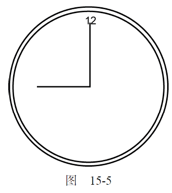
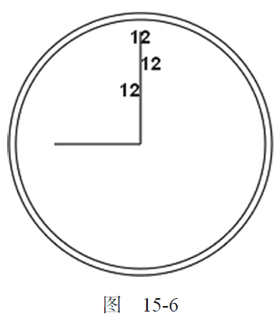
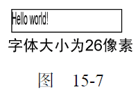

15.2.4 绘制文本
文本与图形总是如影随形。为此，2D 绘图上下文也提供了绘制文本的方法。绘制文本主要有两个方法：fillText()和strokeText()。这两个方法都可以接收4 个参数：要绘制的文本字符串、x 坐标、y 坐标和可选的最大像素宽度。而且，这两个方法都以下列3 个属性为基础。
-
font：表示文本样式、大小及字体，用CSS 中指定字体的格式来指定，例如"10px Arial"。
-
textAlign：表示文本对齐方式。可能的值有"start"、"end"、"left"、"right"和"center"。建议使用"start"和"end"，不要使用"left"和"right"，因为前两者的意思更稳妥，能同时适合从左到右和从右到左显示（阅读）的语言。
-
textBaseline：表示文本的基线。可能的值有"top"、"hanging"、"middle"、"alphabetic"、"ideographic"和"bottom"。
这几个属性都有默认值，因此没有必要每次使用它们都重新设置一遍值。fillText()方法使用fillStyle 属性绘制文本，而strokeText()方法使用strokeStyle 属性为文本描边。相对来说，还是使用fillText()的时候更多，因为该方法模仿了在网页中正常显示文本。例如，下面的代码在前一节创建的表盘上方绘制了数字12：
context.font = "bold 14px Arial";
context.textAlign = "center";
context.textBaseline = "middle";
context.fillText("12", 100, 20);
运行一下
结果如图15-5 所示。

因为这里把textAlign 设置为"center"，把textBaseline 设置为"middle"，所以坐标(100,20)表示的是文本水平和垂直中点的坐标。如果将textAlign 设置为"start"，则x 坐标表示的是文本左端的位置（从左到右阅读的语言）；设置为"end"，则x 坐标表示的是文本右端的位置（从左到右阅读的语言）。例如：
//正常
context.font = "bold 14px Arial";
context.textAlign = "center";
context.textBaseline = "middle";
context.fillText("12", 100, 20);
//起点对齐
context.textAlign = "start";
context.fi llText("12", 100, 40);
//终点对齐
context.textAlign = "end";
context.fi llText("12", 100, 60);
运行一下
这一回绘制了三个字符串"12"，每个字符串的x 坐标值相同，但textAlign 值不同。另外，后两个字符串的y 坐标依次增大，以避免相互重叠。结果如图15-6 所示。

表盘中的分针恰好位于正中间，因此文本的水平对齐方式如何变化也能够一目了然。类似地，修改textBaseline 属性的值可以调整文本的垂直对齐方式：值为"top"，y 坐标表示文本顶端；值为"bottom"，y 坐标表示文本底端；值为"hanging"、"alphabetic"和"ideographic"，则y 坐标分别指向字体的特定基线坐标。
由于绘制文本比较复杂，特别是需要把文本控制在某一区域中的时候，2D 上下文提供了辅助确定文本大小的方法measureText()。这个方法接收一个参数，即要绘制的文本；返回一个TextMetrics对象。返回的对象目前只有一个width 属性，但将来还会增加更多度量属性。
measureText()方法利用font、textAlign 和textBaseline 的当前值计算指定文本的大小。
比如，假设你想在一个140 像素宽的矩形区域中绘制文本Hello world!，下面的代码从100 像素的字体大小开始递减，最终会找到合适的字体大小。
var fontSize = 100;
context.font = fontSize + "px Arial";
while (context.measureText("Hello world!").width > 140) {
fontSize--;
context.font = fontSize + "px Arial";
}
context.fillText("Hello world!", 10, 10);
context.fillText("Font size is " + fontSize + "px", 10, 50);
运行一下
前面提到过，fillText 和strokeText()方法都可以接收第四个参数，也就是文本的最大像素宽度。不过，这个可选的参数尚未得到所有浏览器支持（最早支持它的是Firefox 4 ）。提供这个参数后，调用fillText()或strokeText()时如果传入的字符串大于最大宽度，则绘制的文本字符的高度正确，但宽度会收缩以适应最大宽度。图15-7 展示了这个效果。绘制文本还是相对比较复杂的操作，因此支持<canvas>元素的浏览器也并未完全实现所有与绘制文本相关的API。